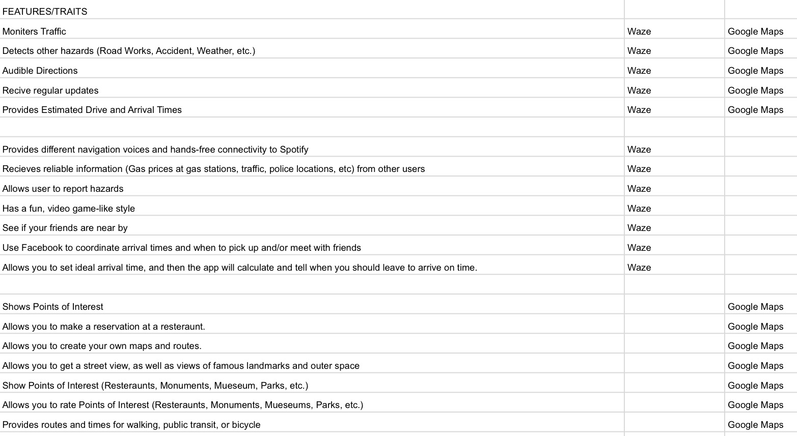

The problem I am trying to solve is figuring out which navigation app would be best to use depending on a person's needs. Some navigation services don't have all the features that a user wants, and that can be troublesome. A data-driven recommendation could help solve this, because data on what needs someone wants to fulfill when finding a good navigation app could make a decision that satisfies that someone. Since there are many navigation/GPS apps to choose from, I'll be comparing two of biggest ones, Waze and Google Maps. And I'm focusing on apps since people are starting to use their phones a lot moreMy target audience for this is people who have a driver's license and are ages 18+.
First I planned out what type of data I should collect. This included finding what features I should look for in a good navigation app,Waze and Google Maps have. I also needed to find out if these apps were regularly updated. To make sure that the data that is collected is clean. I made sure to get it from reliable websites (such as the Waze Forums). I also had to make sure that the data was relatively recent, so any data from before 2016 was not used.
My plan to analyze the datawas to collect the data from websites and then compile and organize it into a chart. This chart would show what features Waze and Google Maps have, and if there's a feature that they both have.
This is the chart I created:
The decision-making with the data will be automated. This is because it would be a lot quicker and easier if you got the result automatically instead of adding together all of the features you wanted yourself. Also, I feel that ideally, the data on the chart should be presented in survey format (seen in picture below). and it would be better if the results automatically showed after you take the survey (similarly to the "Harry Potter House Quiz").
The set of basic rules for survey algoritm will be: